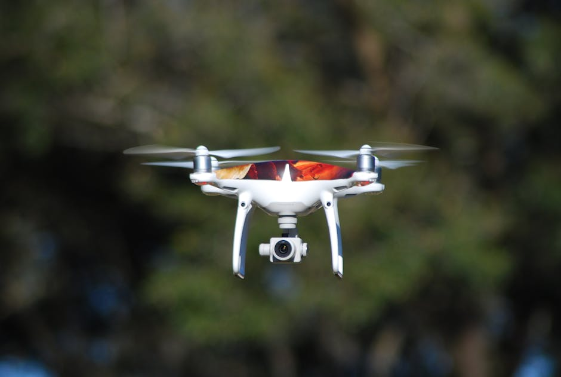

Imagine a world where tiny flying robots navigate complex environments all on their own, making smart decisions, delivering packages, inspecting vast farmlands, or even helping in disaster zones. This isn't just science fiction anymore; it's the incredible reality of AI-powered drones, and they are revolutionizing how we interact with the sky above us! At MakerWorks, we believe in empowering the next generation of innovators, and today, we're taking a deep dive into the fascinating realm where aerial robotics meets artificial intelligence.
What Exactly are AI-Powered Drones?
You've probably seen drones before – those buzzing quadcopters people fly for fun or to capture stunning aerial photos. But an AI-powered drone is much more than just a remote-controlled toy. Think of it as a drone with a brain! While a regular drone needs constant human input to fly and perform tasks, an AI drone can understand its surroundings, make decisions, and execute complex missions autonomously, meaning it acts on its own without direct human control for much of its operation.
These intelligent flying machines, often called Unmanned Aerial Vehicles (UAVs), are equipped with sophisticated sensors and powerful onboard computers that run Artificial Intelligence (AI) algorithms. This allows them to perceive, reason, and act in ways that mimic human intelligence, but at speeds and scales humans can't match.
The "Brain" Behind the Buzz: AI in Action
The magic of AI-powered drones lies in their ability to process vast amounts of data in real-time. This involves:
- Computer Vision: Using cameras to "see" and interpret the environment, recognizing objects, people, and obstacles.
- Machine Learning: Algorithms that allow the drone to learn from data, improving its performance over time, much like how humans learn from experience.
- Path Planning & Navigation: Intelligently calculating the most efficient and safest route to a destination, even in dynamic environments.
- Decision Making: Autonomously choosing actions based on sensor inputs and mission objectives, like rerouting around an unexpected obstacle.
How Do They Work? The Tech Behind the Flight
To achieve such incredible autonomy, AI drones integrate a variety of cutting-edge technologies:
1. Advanced Sensors: The Drone's Eyes and Ears
Just like humans rely on our senses, drones use a suite of sensors to gather information about their environment:
- Cameras: High-resolution cameras (RGB, thermal, multispectral) for visual data, crucial for computer vision tasks like object detection and mapping.
- Lidar (Light Detection and Ranging): Uses laser pulses to create detailed 3D maps of the surroundings, essential for obstacle avoidance and precise navigation, especially in low-light conditions.
- GPS (Global Positioning System): For accurate positioning and navigation, knowing exactly where the drone is in the world.
- IMU (Inertial Measurement Unit): Consisting of accelerometers and gyroscopes, it measures the drone's orientation, speed, and angular velocity, crucial for stable flight.
- Ultrasonic/Infrared Sensors: For short-range obstacle detection, especially useful during landing or close-quarter operations.
2. Powerful Onboard Processors: The Drone's Thinking Engine
All that sensor data needs to be processed quickly. AI drones are equipped with powerful, compact computers, often utilizing specialized hardware like GPUs (Graphics Processing Units) or NPUs (Neural Processing Units) designed for AI computations. These "edge AI" processors allow the drone to make real-time decisions without needing to send all data back to a ground station.
3. AI Algorithms: The Drone's Intelligence
This is where the true "AI" comes in. Sophisticated algorithms enable the drone to:
- Simultaneous Localization and Mapping (SLAM): Building a map of an unknown environment while simultaneously keeping track of its own location within that map.
- Object Detection & Tracking: Identifying and following specific objects (e.g., a person in a search and rescue mission, or a defect on a power line).
- Reinforcement Learning: Allowing the drone to learn optimal behaviors through trial and error, similar to how a human learns to ride a bicycle.
Here's a simplified conceptual code snippet illustrating how a drone might make a basic decision based on sensor input:
# This is a simplified conceptual example, not runnable code.
# Imagine this loop running continuously on the drone's onboard computer.
def drone_autonomy_loop():
while True:
# 1. Gather Sensor Data
distance_front = read_ultrasonic_sensor("front")
camera_feed = get_camera_image()
current_gps_coords = get_gps_location()
target_gps_coords = get_mission_target()
# 2. Process Data with AI
obstacles_detected = detect_obstacles_with_AI(camera_feed, distance_front)
current_path = calculate_path(current_gps_coords, target_gps_coords)
# 3. Make Decisions
if obstacles_detected:
print("Obstacle detected! Initiating evasive maneuver.")
execute_evasive_maneuver(obstacles_detected)
recalculate_path()
elif current_gps_coords == target_gps_coords:
print("Mission target reached. Initiating landing sequence.")
initiate_landing()
break # Mission complete
else:
print(f"Following calculated path to {target_gps_coords}.")
fly_along_path(current_path)
time.sleep(0.1) # Small delay before next loop iteration
# Start the autonomous loop
# drone_autonomy_loop()
"The true power of AI in drones isn't just about automation; it's about augmenting human capabilities, allowing us to explore, monitor, and interact with our world in unprecedented ways."
Applications of AI Drones in India and Beyond
The potential uses for AI-powered drones are vast and growing rapidly, especially in a diverse country like India:
- Agriculture (Precision Farming): Drones equipped with multispectral cameras can monitor crop health, detect pests, and precisely apply fertilizers or pesticides, leading to higher yields and reduced resource waste.
- Logistics & Delivery: Imagine delivery drones zipping across cities or rural areas, delivering medicines to remote villages, emergency supplies to disaster zones, or even your online shopping order right to your doorstep. Companies are already piloting these services!
- Infrastructure Inspection: Drones can safely inspect dangerous or hard-to-reach structures like power lines, wind turbines, bridges, and pipelines, identifying defects with AI-powered image analysis, saving time and lives.
- Disaster Management: During floods, earthquakes, or other calamities, autonomous drones can quickly assess damage, locate survivors, and deliver critical aid without risking human lives.
- Security & Surveillance: AI drones can patrol large areas, detect intruders, and monitor public spaces, enhancing security and providing real-time intelligence.
- Environmental Monitoring: Tracking wildlife, monitoring pollution levels, or mapping deforestation are crucial tasks where AI drones offer invaluable assistance.
- Entertainment: Coordinated swarms of AI-powered drones create stunning light shows, replacing traditional fireworks with dynamic, reusable displays.
The Future is Flying High: What's Next?
The field of drone AI is still in its early stages, and the future promises even more incredible advancements:
- Swarm Robotics: Imagine hundreds or thousands of drones working together as a single, intelligent unit to perform complex tasks, like building structures or conducting large-scale searches.
- Advanced Human-Drone Interaction: Drones that can understand natural language commands or even interpret human gestures, making them even easier to integrate into daily life.
- Ethical AI & Regulation: As drones become more autonomous, discussions around data privacy, safety, and ethical decision-making will become even more critical, ensuring responsible development and deployment.
- Energy Efficiency: Innovations in battery technology and alternative power sources will enable longer flight times and greater payload capacities.
Getting Started with Drone AI at MakerWorks!
Are you excited by the prospect of shaping this flying future? At MakerWorks, we provide the perfect launchpad for your journey into aerial robotics and AI. You don't need to be a coding genius or an aerospace engineer to start!
We offer:
- Hands-on Workshops: Learn to build, program, and fly your own drones.
- AI & Robotics Kits: Explore fundamental concepts of AI, computer vision, and autonomous navigation with our specially designed kits.
- Expert Mentorship: Our instructors will guide you through complex topics, making learning fun and accessible.
- Community Projects: Collaborate with fellow enthusiasts on exciting drone-related challenges.
This is your chance to move beyond just playing with drones and start understanding the intelligence that makes them fly. From designing algorithms for obstacle avoidance to programming drones for automated tasks, the possibilities are limitless.
Conclusion: Your Sky-High Adventure Awaits!
AI-powered drones are not just gadgets; they are powerful tools that are reshaping industries, solving real-world problems, and pushing the boundaries of what's possible. From agriculture to logistics, these autonomous marvels are set to become an integral part of our daily lives, and the innovators of tomorrow – YOU – will be at the forefront of this revolution.
Don't just watch the future unfold; be a part of building it! Join MakerWorks today and take your first step towards becoming a drone AI pioneer. Let's build, code, and fly our way to an intelligent future, one drone at a time!